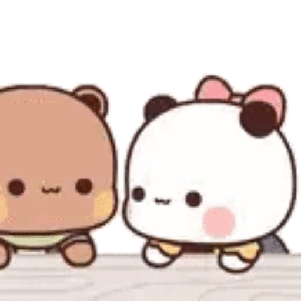
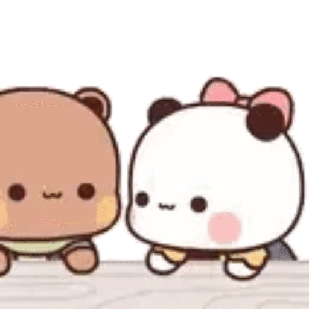
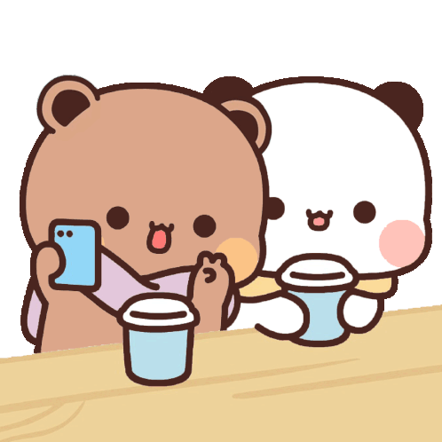
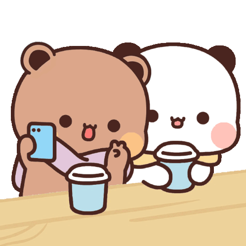

Sentuh LOVEnya!


 


 



HAI HAII MAS BESAAL, ciee di berhasil jawab tebak tebakannya yaa? karena berhasil akuu kasi gift ini spesial buat isaac kiwil 😋 dilihat dan dibaca pelan pelan ya sayangg
aku spesiaal loh kasi ini buat kamuu karena apaa cobaa?
YAAP BENAAR KARNA KITAA MENSIP YEAAY YEAY YEAYY, aku sama mas besaal dah dua bulaan
happy mensive sayaaangku, ga kerasa yaa sayang udaah dua bulan kita berhasil ngelewatin semuanyaa? ngelewatin semua rintangan rintangan yang adaa si hubungan kita
tau gaa? aku tu bener bener sayang banget sama kamu tauu, i'' verryyyy LUCKY to meet you di dunia kecil rp yang inii, BENER BENER BERUNTUNGGG BANGEET hehehehe
kamu beruntung gaa punya aku sayang? HARUS BERUNTUNG LAAH 😡
sayang sayang sayangg aku sebenernya bingung tau mau nulis apa lagi karenaa aku udah banyak banget nulis di gift gift akuu buat kamuu, jadi aku disini nulis random aja yeaah
oh yaaa makasi ya sayang sudah sabar ngadepin sifaat aku yang kadang ngambek, ga jelas, alay, emosian hehehehe
POKOKNYA MAKASI BANYAAK SAYANGKU CINTAKUUU I LOPYUUUU
walau kamu kadang ga PEKA tapi aku tetep sayang ma kamu ay 🤏🏻
BUNDAA AND AYAH ISAAC TERIMAKASI YAAA (terimakasi sudah menciptakan cowo ganteng nan baik hati buat kaluna) bundaa izinin kaluna milikin isaac selamanya dongg 😋
MAAF KALAU ALAY SAYANG?? tapi aku beneran SAYANG banget sama kamu, gimana donggggggg??!! YA GAPAPA GASIH? kan aku pacal kamu wlelelelelelele :p
aku haraaap di mensive kita yang kedua bulan ini kita bisa sama sama terus yaa sayang? aku benar benar menyimpan banyaak kasih sayang dihubungan kitaaa
jangan bosen bosen baca gift gift dari aku ini yaa sayangg? t___t
KARENAA aku tu sayang ih sama kamu, i love you isaac hartley, zion kiwil, frederick martin, mas besaal, DAAN APA LAGI NAMA KAMU AY? banyak banget sihh hehehe, i love you deh intinya <333
Klik untuk Geser!
sayaaang dibaca sampai akhir yaa, pelan pelan aja bacanya hehehe. sayaaaang happy 2st mensiversary yaa, ga kerasa banget gasii aku udah dua bulan bareng sama kamu, sehari hari aku sama kamu kaya rollelcoaster tau ayy kadang ada ajaaa rintangannya, tapi nagih sii hehehe... sayaang makasi banyak yaa udah bikin dua bulan ini penuh dengan banyaaaak warna, tawa, cinta, daan kasih sayang :D aku sukaa gimana kamu selalu ada buat aku bahkan pas aku lagi gamut, galau, ngambek (eyy ini kadang nii) intinya terimakasi banyak yaa sayang. And honestly, i din't think i'd fall this hard. but i did (did tolongin did) ga yaa bercanda t___t sayaang you're the peace in mu chaos, the smile after my sighs, and the one i want to keep choosing every day, every version of us. here's to us, and to whatever comes next i'm all in. with you.
I LOVE YOU SOUUU MUCH MAS BESAAL NAA AKU, GANTENG NAA AKUU, SAYANG NAA AKU, ISAAC NA AKUU 🫶🏻🫶🏻